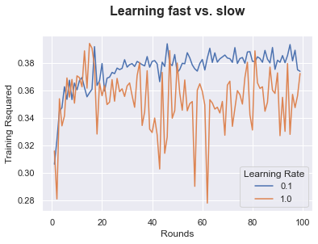
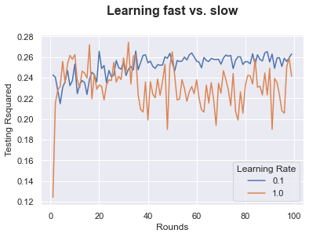

# Plot the Training Accuracy of adaboosts with n_estimators running from n1 to n2 and two learning rates l1 and l2. n1 =1n2 =100l1 =.1l2 =1ac = pd.DataFrame([], columns=list(['Rounds','Learning Rate','Training Rsquared']))from sklearn.tree import DecisionTreeClassifierfor rs inrange(n1, n2):for lr in [l1, l2]: boost = AdaBoostRegressor(n_estimators=rs, learning_rate=lr) boost.fit(x_train,y_train) ac = ac.append(pd.DataFrame([[rs, lr, boost.score(x_train,y_train) ]], columns=list(['Rounds','Learning Rate','Training Rsquared'])), ignore_index=True)import seaborn as sns; sns.set()import matplotlib.pyplot as pltax = sns.lineplot(x="Rounds", y="Training Rsquared", hue =ac['Learning Rate'].astype('category'),data=ac)ax.text(x=0.5, y=1.1, s='Learning fast vs. slow', fontsize=16, weight='bold', ha='center', va='bottom', transform=ax.transAxes)
Text(0.5, 1.1, 'Learning fast vs. slow')

# Plot the Training Accuracy of adaboosts with n_estimators running from n1 to n2 and two learning rates l1 and l2. n1 =1n2 =100l1 =.1l2 =1ac = pd.DataFrame([], columns=list(['Rounds','Learning Rate','Testing Rsquared']))from sklearn.tree import DecisionTreeClassifierfor rs inrange(n1, n2):for lr in [l1, l2]: boost = AdaBoostRegressor(n_estimators=rs, learning_rate=lr) boost.fit(x_train,y_train) ac = ac.append(pd.DataFrame([[rs, lr, boost.score(x_test,y_test) ]], columns=list(['Rounds','Learning Rate','Testing Rsquared'])), ignore_index=True)import seaborn as sns; sns.set()import matplotlib.pyplot as pltax = sns.lineplot(x="Rounds", y="Testing Rsquared", hue =ac['Learning Rate'].astype('category'),data=ac)ax.text(x=0.5, y=1.1, s='Learning fast vs. slow', fontsize=16, weight='bold', ha='center', va='bottom', transform=ax.transAxes)
Text(0.5, 1.1, 'Learning fast vs. slow')

2. Practice
Find a dataset with a continuous target variable.
Set the input (X) and output (y). Split the data into 60% training and 40% testing
Train an adaboost with 200 n_estimators and .1 learning rare. What is testing Rsquared of the adaboost?
What is the most important variable according to the above adatboost model?
Find an adaboost that have a higher testing accuracy than the above adaboost. What is the n_estimators and learning of this adaboost?
Plot the Training Rsquared of adaboosts with n_estimators running from 50 to 100 and two different learning rates. Give your comments on the plot.
Plot the Testing Rsquared with different with n_estimators running from 50 to 100 and two different learning rates. Give your comments on the plot.